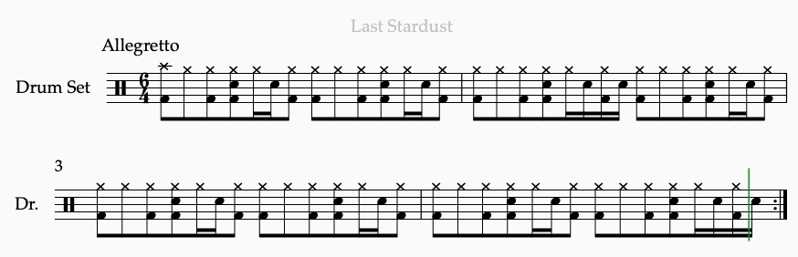

Composing for Drums
July 14, 2022
While I was scouring the internet researching for this blog, I came across a quote that seemingly encapsulated my struggles with understanding how to write anything for drums: "If you don't play the drums, the task of writing for them can seem impenetrable–whereas building up skills on one instrument such as a horn or a piano can theoretically transfer to writing for other instruments, drums are so different in how they are played and their role in an ensemble that it requires a lot of extra knowledge just to get started".
As someone who has only ever played before in Orchestras and String Quartets, learning how drums are played and notated, and composing for them seemed a daunting prospect. In this article, I will explain how drum notation works, and how one can incorporate drums into their composition. Then, I'll give some examples on how drums are used in my favorite songs.
This is a typical drum "loop". It will eventually unlock a quite rich and fascinating world of music. The "clef" you see on the very right is the sign designated for percussion instruments. Actually, drummers use the Western notation system that most instruments use. The next image will show which drums in a typical drum kit belong to which notes on the staves.
Cymbals are notated as "x" while drums are simple notes. Staves point up if played with the hand, and point down if played with the feet. This idea is similar to how Soprano and Alto should always point up (Tenor and bass, down) in SATB voicings.
Each note on the staff corresponds to a drum with a different name: Going from top to bottom, their names are as follows: Crash, Hi-hat, Ride, Tom 1, Tom 2, Snare, Floor, Kick, and Hi Hat Foot. Notice that there are two Toms in this particular example–A drummer can add notation for extra drums to their drum kit–For example, if they wanted an extra snare, they would be able to notate that second snare by putting a notehead on what would be considered "B" in a treble clef. And… That's it! You've unlocked all the tools you need to notate drums.
If you're not comfortable with drum notation yet, that's completely okay. I recommend you watch this video, which goes over what we've just discussed and also shows the different sounds which the parts of the drum kit make.
Hopefully by now, you've come to understand how drum notation works, and have come to associate each drum or cymbal with a particular sound or function. The next step is composing for drums–Credit where credit is due; I will be mostly summarizing content which can be found in this video, though I'll add my own examples which are hopefully more interesting for you to listen into.
The first thing you'll need is a short, repeated pattern (ostinato) which the drums default to during a particular section of your piece. The video above calls this the "Groove". All the frilly bits can come later, but you'll need a solid baseline to work with. Below is an example of various Grooves from Japanese music:
Groove/Ostinato for verse of "It's Raining After All"

Groove/Ostinato for verse of "Last Stardust"
Intro to "Compared Child". Groove switches halfway.
A "Groove" can be a single bar, two bars, four, or even eight. However, two is a good goal to hit, as it takes the least amount of effort, and modification whilst still making your composition seem much less robotic and repetitive. There can be multiple Grooves in each piece–but if that's the case, they should each correspond to a different section of it. One can be for the verse, the other for the chorus, etc.
The other important aspect of drums are Fills. Fills are the flurries of notes that come right before the transition between different sections of a piece. They contrast the predictable Groove by adding an unpredictable component to the drum score. Fills can be both small and large, and serve to catch the listeners attention and alert them to an upcoming change to the piece. Fills can also be improvised by the drummer, though for the examples below I will be showing examples of drum fills that are 'hard coded' into the music.
Drum Section of "Is There Still Anything That Love Can Do?" at 4:57.
Drum fill in "Goodbye to Rock you" at 0:16.
Drum section in "Adrenaline!!" at 0:41.
Notice how the fill in "Adrenaline!!" is simply a short sixteenth note snare drum passage followed by a cool triplets figure. Clearly, your fills don't need a revolutionary, out of this world drum fill to be effective at capturing the listeners attention.
You've reached the end of this blog–I'm sure what I've covered here scratches just the basics on how drums work. I will say in advance that I'm no drum expert myself. Hopefully, you've been able to glean something from this glib article! See you next month.